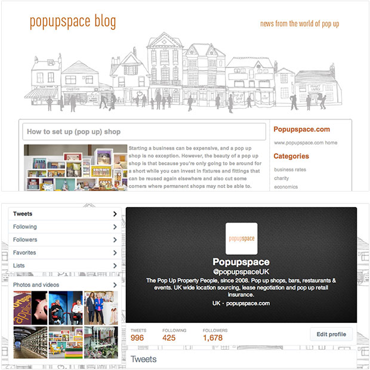
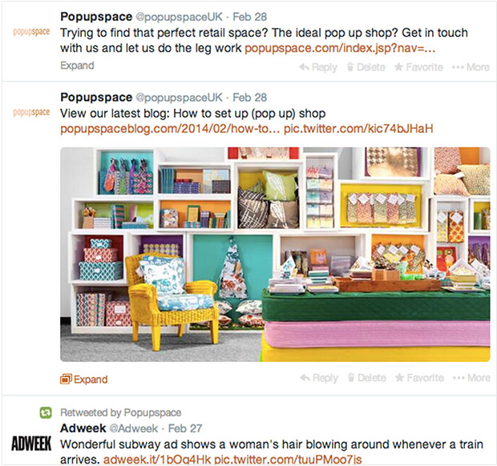

The brief
Popupspace needed me to take managing their blog and Twitter feed off of their hands and create a consistent feed of content promoting their services and the industry as a whole. They needed some guidance on how to approach creating content, and also required me to upload posts to their blog which is powered by WordPress.
I created a blog and social media strategy for the client, a document which took into account what their competitors are doing, how their analytics look, and also contained a plan of action which had ideas for future blog posts. This document became a vital reference point for both myself and the client to ensure the campaign is running on track.
The result
Click on the images for links to the content.


Since the start of the year interactions on Twitter have gone up and there’s a steady flow of approximately 20 new followers each week.
The client had this to say about my work:
Jo has been great to work with; she quickly picked up the brief we gave her and put forward creative ideas and suggestions. Results have been good and we are happy to recommend Jo’s services.
If you’ve been thinking about refreshing your content and would some help managing your blog or social media account, then get in touch.